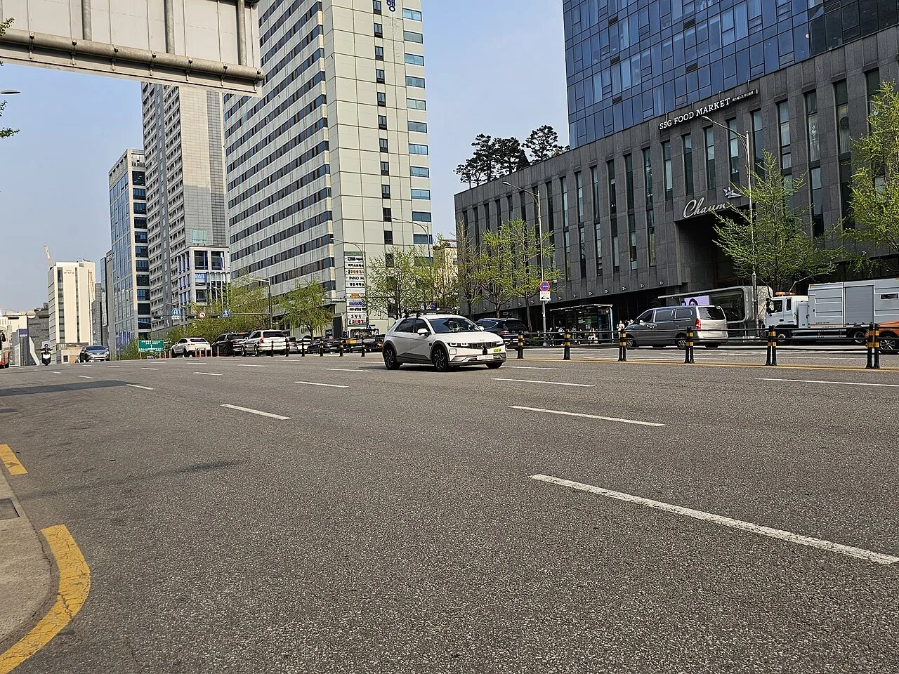

▲ 루프에 라이다·카메라 등 자율주행 센서를 얹은 아이오닉5 실증 차량이 도심을 주행하고 있다.
1. 무슨 일이 있었나
현대차그룹과 웨이모의 로보택시 협력이 조지아 메타플랜트 양산과 맞물려 실행 단계로 넘어간다. 2024년 10월 발표된 다년 전략적 파트너십에 따라 현대차 아이오닉5가 웨이모의 6세대 완전 자율주행 기술 '웨이모 드라이버'를 탑재한 로보택시로 전환돼, 2026년 4분기부터 웨이모원 이용객에게 순차 투입될 예정이다.
공급 대상 차량은 조지아주 브라이언 카운티에 위치한 현대차그룹 메타플랜트 아메리카(HMGMA)에서 조립된다. HMGMA는 2024년 10월 가동을 시작한 76억 달러 규모의 신설 공장으로, 완전 가동 시 연간 50만 대의 현대·기아·제네시스 전기·하이브리드 차량을 생산할 수 있다. 아이오닉5는 이 공장에서 조립된 뒤 별도 인테그레이션 시설에서 웨이모의 센서·컴퓨팅 하드웨어와 결합되는 방식으로 로보택시 사양을 갖춘다.

▲ 루프 라이다와 측면 레이더 등 자율주행 센서를 장착한 아이오닉5 시험 차량. 실제 웨이모 사양 차량과 센서 구성이 유사하다. ⓒ Wikimedia Commons
2. 계약 규모와 공급 일정
업계에서는 이번 계약 규모를 최대 5만 대, 약 25억 달러 수준으로 추산한다. 대당 단가는 약 5만 달러 선으로 알려졌으며, 공급은 2028년까지 단계적으로 이뤄질 전망이다. 다만 현대차와 웨이모 양사는 공식 발표에서 구체적인 계약 금액과 대수를 확정 공개하지 않았고, 이는 업계 추정치임을 밝혀둔다.
| 항목 | 내용 |
|---|---|
| 생산 거점 | 현대차그룹 메타플랜트 아메리카(HMGMA, 조지아) |
| 공급 규모(추정) | 최대 5만 대, 약 25억 달러 규모 |
| 공급 시작 | 2026년 4분기(2025년 말부터 도로 테스트 선행) |
| 공급 완료 목표 | 2028년 |
| 탑재 기술 | 웨이모 6세대 자율주행 시스템 '웨이모 드라이버' |
초기 도로 테스트는 2025년 말 샌프란시스코 등지에서 시작됐으며, 이후 일반 승객을 태우는 웨이모원 서비스로 순차 확대된다는 것이 골자다. 아이오닉5는 800V 초고속 충전 아키텍처를 갖춰 10%에서 80%까지 약 18분 만에 재충전이 가능한데, 이는 하루 종일 쉬지 않고 운행해야 하는 로보택시 운영 특성상 중요한 경쟁력으로 꼽힌다.
3. 어느 도시에서 타게 되나
웨이모는 현재 미국 20여 개 도시권에서 서비스를 운영 중이며, 아이오닉5는 이 기존 서비스망에 순차 투입되는 구조다. 보도에 따르면 웨이모의 현재 서비스 범위는 인구 약 1억 1,500만 명을 포괄하는 미국 20개 도시로 확대돼 있고, 국제적으로는 도쿄와 런던 진출도 예고된 상태다. 다만 아이오닉5가 최초로 투입될 구체적 도시가 공식 확정된 것은 아니며, 현대차·웨이모 양사 공식 발표문에는 특정 도시명이 명시되지 않았다.
현재 웨이모 함대의 주력은 재규어 I-PACE 기반 차량으로, 매주 40만 건이 넘는 유료 자율주행 승차를 소화하고 있다. 아이오닉5는 여기에 더해 지커(Zeekr) 기반의 대형 로보밴과 함께 웨이모의 차종 다변화 전략의 한 축을 담당하게 된다.

▲ 현재 웨이모 함대의 주력인 재규어 I-PACE 로보택시가 샌프란시스코 도심을 주행하고 있다. 아이오닉5는 이 기존 함대에 합류하는 신규 차종이다. ⓒ Waymo
4. 기술 파트너십의 핵심
이번 협력의 핵심은 '차량 제조'와 '자율주행 소프트웨어'의 역할 분리다. 현대차는 로보택시 전용으로 설계된 하드웨어 플랫폼—중복 브레이크·조향 시스템, 전동식 도어, 센서 장착을 위한 구조 보강 등—을 제공하고, 웨이모는 여기에 카메라·레이더·라이다를 결합한 6세대 자율주행 시스템 '웨이모 드라이버'를 통합한다.
📍 왜 아이오닉5였나
웨이모는 협력사 선정 기준으로 전동화 플랫폼의 안정성과 확장성을 꼽아왔다. 아이오닉5가 기반하는 E-GMP 플랫폼은 800V 초고속 충전, 높은 실내 공간 효율, 모듈화된 전장 구조를 갖춰 로보택시용 센서·컴퓨팅 하드웨어를 통합하기에 유리하다는 평가를 받는다. 현대차 입장에서도 메타플랜트 가동률을 끌어올릴 대규모 안정적 수요처를 확보했다는 의미가 크다.
웨이모가 자체 개발한 자율주행 하드웨어·소프트웨어 스택을 완성차에 이식하는 방식은 앞서 재규어 I-PACE, 지커 로보밴에도 적용된 바 있다. 아이오닉5는 이 라인업에 합류하는 세 번째 차종이자, 첫 대규모 양산형 볼륨 모델이라는 점에서 상징성이 크다는 평가다.
5. 남은 변수들
대규모 로보택시 사업의 관건은 결국 규제 승인과 안전성 검증이다. 미국 각 주는 자율주행 서비스 운영 요건이 제각각이며, 신규 도시 진출 때마다 별도의 도로 테스트와 규제 당국 승인 절차를 거쳐야 한다. 아이오닉5가 실제로 몇 개 도시에서, 얼마나 빠르게 유상 서비스를 시작할지는 이 과정에 달려 있다.
✅ 체크포인트
· 계약 규모(최대 5만 대·25억 달러)는 업계 추정치이며 양사 공식 확인 수치가 아니다
· 2026년 4분기는 초기 도로 테스트를 마친 뒤 유상 서비스가 본격화되는 시점을 가리킨다
· 최초 상용 도시는 아직 공식 미확정 상태다
· 아이오닉5는 재규어 I-PACE, 지커 로보밴에 이어 웨이모 함대의 세 번째 차종이 된다

▲ 웨이모 로보택시의 기반이 되는 아이오닉5 양산 모델의 후측면. HMGMA에서 조립되는 차량도 동일한 E-GMP 플랫폼을 기반으로 한다. ⓒ Wikimedia Commons
6. 정리
현대차그룹 메타플랜트에서 생산된 아이오닉5가 웨이모의 6세대 자율주행 기술을 탑재해 2026년 4분기부터 로보택시로 전환 투입된다. 최대 5만 대, 약 25억 달러 규모로 추정되는 이번 공급은 2028년까지 단계적으로 이뤄질 예정이며, 현재 20여 개 도시에서 운영 중인 웨이모 서비스망에 순차 편입될 전망이다. 구체적 상용 도시와 최종 계약 조건은 아직 공식 확정되지 않아 추가 발표를 지켜볼 필요가 있다.